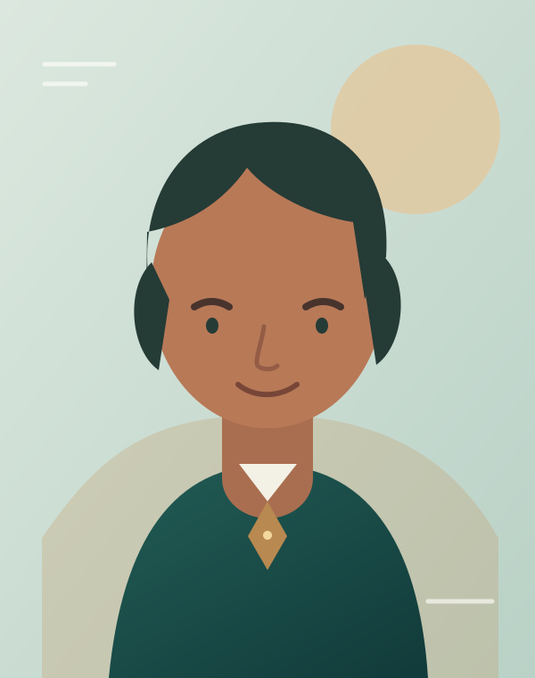

CYBERSECURITY STUDENT · MIVA OPEN UNIVERSITY
Curious by nature.
Secure by design.
Hello, I’m Collins Atuanya. I’m learning how to make the digital world safer, one thoughtful project at a time.

Always curiousLearning in progress
Digital safetyPeople first, always
Building a strong foundation in technology, security, and service.
PROGRAMMECybersecurityCOURSECOS 106FOCUSWeb technologies
A GOOD PLACE TO START
More than a student bio.
This portfolio brings together the person behind the coursework and the ideas taking shape along the way.
01 / PROFILE
My story
My studies, interests, and the kind of security professional I hope to become.
Discover more ↗ 02 / WORKIdeas in action
Three learning projects shaped by a practical, people-first approach.
View projects ↗ 03 / ROUTINESmall steps, kept
A simple academic planner that helps turn plans into progress.
Open the planner ↗Good security starts with understanding the people and places it is meant to protect.A principle I bring to every project
LET’S CONNECT
Have an idea worth exploring?
I’m always glad to meet people who care about technology and making it more useful.